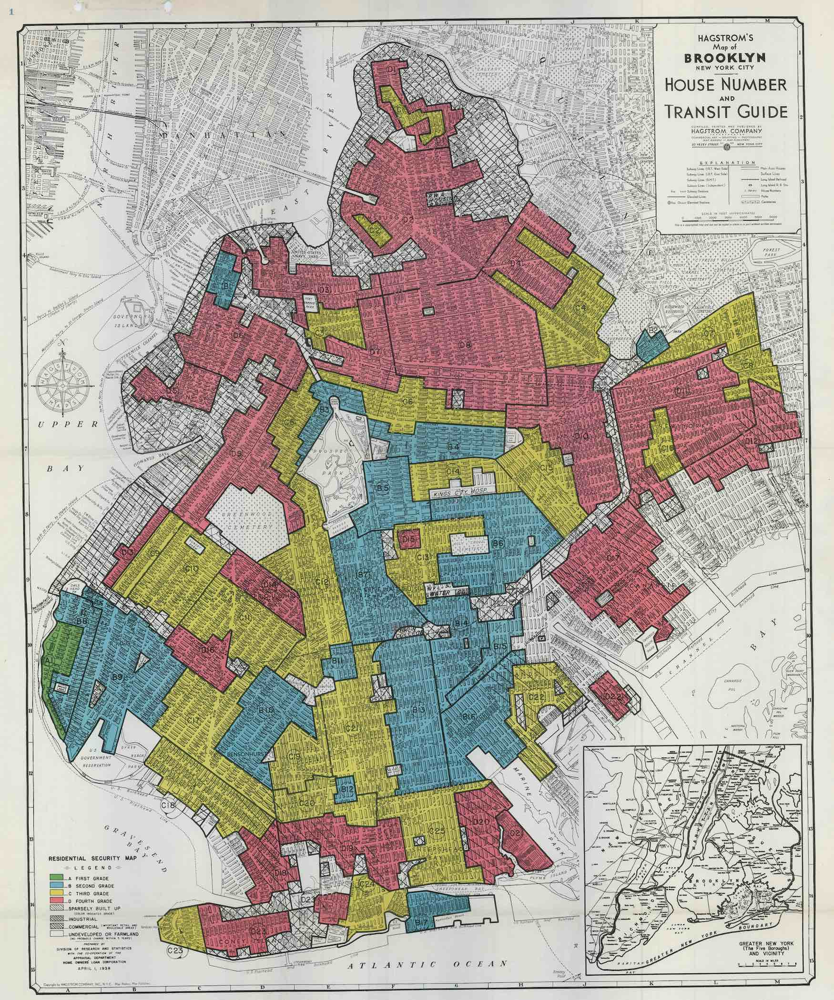

Notes for my students on using ChatGPT
Using ChatGPT
This page is about using ChatGPT or similar models in this classroom.
TLDR:
- I encourage you to explore the technology, both how it works, how you might use it as a tool, and the very real issues for society surrounding this tool
- Don’t rely on this tech being there for free. It is all very new and it could easily be pulled off the internet at anytime. It costs a lot of money to run these models, and I would be surprised if they stay free for long—time will tell.
- If you use ChatGPT in one of your assignments, please mention this in the assignment and how you used it. I’ll go over some clearly acceptable uses cases, and some clearly unacceptable ones below.
- Passing off work from ChatGPT as your own is a violation of academic integrity that will be taken very seriously. I care about what you have to say, not what ChatGPT has to say.
- ChatGPT will produce absolute hot garbage, be careful.
The rest of this page provides information on how to access ChatGPT, some information about ChatGPT, and then some examples of using ChatGPT.
Accessing ChatGPT
You can access chatGPT here from the openai.com website. It is currently free to use, but you have to sign up for an account.
Things to know about ChatGPT
ChatGPT is a large language model (LLM) created by a company called OpenAI. Many big tech companies are creating their own versions of this technology. For example, Meta released a model called Galactica AI to the public on November 15th, 2022; and, then shut it down after three days. Microsoft Bing is currently releasing it’s own “chatbot”. Google apparently has one called Bard?
I happen to have some limited expertise in the science behind large language models. For example, one area of my research involves human semantic cognition and language production. This area of research has a long history of producing computational models attempting to how people understand the meaning of words, and how they produce grammatical sentences.
People have large amounts of language experience. Think about how many words you have heard or read across your entire life. Some theories of language assume that people learn about word meaning gradually through their own personal history of experiencing examples of language. Language is highly structured and not random. This means that words can be predicted based on the context in which they occur.
If you read the sentence:
After buying _________ at the grocery store, she squeezed the __________ to make ________ juice.
Based on the context of the sentence you might infer that the person bought oranges, or some other fruit that can be squeezed to make juice.
If you were able to look back at all the sentences and phrases you have ever heard in your life, you would probably find many examples where “oranges” or other fruit words were next to juice, or in the same sentence as words like squeeze, or grocery store. Your experience with co-occurring patterns in language can help you predict words in sentences. This is the basic principle behind large language models.
Large language models are not like people. They have been trained on huge corpuses of text (e.g., half a trillion words). There have been ongoing efforts to digitize as much human produced text as possible. The google books project was one of the first. They scanned as many books in the world as they could. We also have the internet where people have produced all kinds of text, both regular language, and computer code. It is possible to download most things on the internet using scraping. For example, you could download all of wikipedia or reddit. That’s a lot of text.
To give a bit more history, in 1998 a model called Latent Semantic Analysis (LSA) was trained on a much smaller set of text examples called the TASA corpus (37,000 documents, about 10 million words.) That model was able to do some impressive things, such as pass the TOEFL (english language equivalency exam), and even grade essays with similar results as expert graders. However, that model was not able to produce whole sentences or paragraphs that looked like real sentences.
ChatGPT is a filtered version of another model called GPT-3. This model was trained on half a trillion words. Since 1998 there have been advances in computing technology (memory, processor speed, and algorithms), that make it possible to statistically model the patterns of word-occurrence across a huge set of examples. The result is that these models can successfully produce “realistic” looking sentences, paragraphs, and more; all based on the structure of the training examples.
To a rough approximation, ChatGPT writes new text based on probabilistic recombination of similar text that it has been trained on. You can give the model example text prompts, and it will generate completions that are similar to the kind of text that has completed those kind of prompts in the training database.
There is a really general principle at work here that applies not only to text, but any large set of examples. If you have a large set of examples, it is possible to train a machine learning model to extract the statistical structure from the examples, and then generate new examples that are like the trained examples. This also applies to image generation tools like DALL-E, or Midjourney.
Garbage in - Garbage out
LLMs have been trained on as much text as possible. Unfortunately, this includes digitized books and propaganda from the past and present that are racist, homophobic, transphobic, mysogynistic, xenophobic, and so on. This also includes hate speech scrawled across internet forums. This also includes conspiracy theories and things that internet trolls say.
LLMS produce new text that looks like the text it was trained on. It is very common for LLMs to reproduce text that mirrors all of the biases that exist in digitized text. LLMs released to the public are often quickly shut down because they spew so much hot garbage.
If you use ChatGPT you may experience toxic text. OpenAI has attempted to solve the problem with a filtering system. For example, the model is capable of generating text that is similar or dissimilar to other text. If you had many examples of toxic hate speech, you could ask the model to generate new text that is NOT like the toxic hate speech examples. The filtering is imperfect.
There was a report from TIME magazine on January 18, 2023 that shed some light on how OpenAI made ChatGPT less toxic. The article is OpenAI Used Kenyan Workers on Less Than $2 Per Hour to Make ChatGPT Less Toxic. The strategy was to show Kenyan workers examples of text that “described situations in graphic detail like child sexual abuse, bestiality, murder, suicide, torture, self harm, and incest.” The workers were asked to label whether the text was toxic or not. OpenAI then used the labels in their filtering system in attempt to prevent the model from outputting toxic text.
Ethical concerns
There are numerous concerns about these emerging technologies and widely divergent opinions, ideologies, and interests at play. This is not an exhaustive list.
In order for these models to work, they must have huge sets of training examples. Where did the examples come from, and did people who created the examples give permission to these private companies to use them? To what extent are the outputs of these models high-tech plagiarism of stolen intellectual property? Are original content-creators whose training examples were extracted without permission being compensated? Should big tech companies be allowed to “move fast and break things” in this space? What are the harms of this new tech, who is shouldering the burden?
The questions around AI ethics abound, and tech company responses to theses issues continue to be controversial. For example, Timnit Gebru is a computer scientist (and AI expert) who was the co-lead of Google’s Ethical Artificial Intelligence team. In 2020, she co-authored a paper called “On the Dangers of Stochastic Parrots: Can Language Models Be Too Big?”. To quote from wikipedia, this paper”covered the risks of very large language models, regarding their environmental and financial costs, inscrutability leading to unknown dangerous biases, the inability of the models to understand the concepts underlying what they learn, and the potential for using them to deceive people.” Timnit was fired (or release according to Google) for refusing to withdraw the paper and scrub names of Google employees from the list. Events like this raise broad questions about how tech companies are meeting or not meeting ethical concerns about their technologies.
Timnit is the founder of DAIR (Distributed AI Research Institute) which is a “space for independent, community-rooted AI research, free from Big Tech’s pervasive influence”. She continues to advocate and draw attention to major ethicall concerns in this space, among others.
There are strange rabbit holes about this emerging technology, investors in the technology, and some of their apparent affiliations and ideologies for society. For example, what does crypto currency, longtermism, affective altruism, big-tech billionaires, technocracy, transhumanism, getting to mars, and artificial intelligence have to do with each other? Like I said, it’s a rabbit hole, and here are a few articles if you are interested:
“Longtermism” and AI: How Our Billionaire Overlords Want to Live Forever
ChatGPT examples
Sign up for an account at
This service is currently free. Sometimes the server doesn’t work. To use the service you enter text prompts and ChatGPT returns text outputs. By using the service you are helping OpenAI further train this model, for better or worse. You’re not getting paid, but you’re getting the service for free.
In our class we are learning about many topics and writing about them. Here are some ways you could use ChatGPT. Remember, please identify in your work when and how you have used ChatGPT.
We need some text to begin with. I’m not comfortable taking someone else’s text and playing around with it in ChatGPT. For example, I could copy/paste paragraphs from our textbook and work with that text. It would probably benefit ChatGPT to have examples from our textbook. At the same time, I think OpenAI should pay the authors a royalty for use and re-use of their fantastic material.
Instead, I will sacrifice my own writing to ChatGPT. Let’s start with the topic redlining. This was a practice that reinforced segregation in NYC neighborhoods, and is relevant to our class. I’ve been learning about redlining practices from a book called the Color of Law (Rothstein 2017).
We are reading about similar topics in our class, and being asked to write about them. Let’s say the assignment was to conduct some research about redlining, and the write a paragraph about redlining in Brooklyn. Based on what I read in the book, I wrote this paragraph:
Redlining in Brooklyn. By Matt Crump.

Redlining was a real-estate practice from the 1930s that promoted and reinforced segregation between black and white people across cities in America, including Brooklyn. The figure from 1938 shows a map of Brooklyn with areas outlined in red. These same areas were majority Black and poor immigrant neighborhoods, and they were labelled as too risky for government insured mortgages. Based on these maps, mortgage lenders refused to issue mortgages in redlined areas. As a result, Black people were denied opportunities for mortgages to purchase homes in their own neighborhoods during this time period.
Let’s use the above to show examples of using ChatGPT in the classroom.
Copy-edit your writing
I entered the prompt:
Can you copy-edit this paragraph for clarity and improved sentence structure?
Redlining was a real-estate practice from the 1930s that promoted and reinforced segregation between black and white people across cities in America, including Brooklyn. The figure from 1938 shows a map of Brooklyn with areas outlined in red. These same areas were majority Black and poor immigrant neighborhoods, and they were labelled as too risky for government insured mortgages. Based on these maps, mortgage lenders refused to issue mortgages in “redlined” areas. As a result, Black people were denied opportunities for mortgages to purchase homes in their own neighborhoods during this time period.
This is what ChatGPT returned:
Redlining was a real estate practice that originated in the 1930s, aimed at promoting and reinforcing segregation between black and white people across American cities, including Brooklyn. A 1938 figure displays a map of Brooklyn with specific areas outlined in red, which were predominantly inhabited by Black and poor immigrant communities. These areas were deemed too risky for government-insured mortgages and were labeled as “redlined” neighborhoods. Due to this designation, mortgage lenders refused to issue mortgages in these areas, thereby depriving black people of the opportunity to purchase homes in their own neighborhoods. As a result, during this time period, they were unable to secure mortgages and suffered from systemic discrimination.
My assessment: You might get OK results. I like some of the rephrasing, but not others. It made my paragraph longer, and it messed up some subtle details.
Summarize into points
Input:
Can you summarize this paragraph into a few main points?
Redlining was a real-estate practice from the 1930s that promoted and reinforced segregation between black and white people across cities in America, including Brooklyn. The figure from 1938 shows a map of Brooklyn with areas outlined in red. These same areas were majority Black and poor immigrant neighborhoods, and they were labelled as too risky for government insured mortgages. Based on these maps, mortgage lenders refused to issue mortgages in “redlined” areas. As a result, Black people were denied opportunities for mortgages to purchase homes in their own neighborhoods during this time period.
Output:
In the 1930s, redlining was a real estate practice that encouraged and strengthened segregation between black and white people in cities like Brooklyn. Neighborhoods with Black and poor immigrant residents were identified as “risky” and labeled as “redlined” areas. This designation made it impossible for Black people to secure mortgages to purchase homes in these neighborhoods as lenders refused to offer mortgages in these areas. Consequently, black people were denied the opportunity to purchase homes in their own neighborhoods.
I was expecting it to make point form points, but I guess I should have been more specific with the prompt.
Write a paragraph
Hmmm…what hell ChatGPT.
It is of course possible to ask ChatGPT to write the paragraph itself from scratch. Let’s see what it does.
I entered the prompt:
Can you write a short paragraph explaining the practice of redlining in Brooklyn during the 1930s?
Output
During the 1930s, redlining was a real estate practice in Brooklyn, New York, that sought to promote and reinforce segregation between black and white people. Neighborhoods with Black and poor immigrant communities were designated as “risky” and labeled as “redlined” areas, making it impossible for Black people to obtain mortgages to purchase homes in these neighborhoods. As a result, they were denied the opportunity to purchase homes in their own communities. Redlining was a discriminatory practice that had a lasting impact on the housing market, contributing to the racial wealth gap that persists in America today
Parts of the output are very similar to my original paragraph. In this case ChatGPT seems to be using my own words back at me. Sigh.
Get writing advice
Prompt:
Can you explain the components of a simple paragraph, and tell me what each what kinds of sentences should go at the beginning, middle and end of a paragraph?
Output:
Sure! A paragraph is a collection of sentences that focus on a single topic or idea. The three main components of a paragraph are the topic sentence, supporting sentences, and concluding sentence.
- Topic Sentence: The topic sentence is usually the first sentence of the paragraph and serves as the main idea or thesis statement. It introduces the topic of the paragraph and tells the reader what the paragraph is going to be about.
- Supporting Sentences: The supporting sentences come after the topic sentence and provide further information and details about the topic. These sentences support the main idea of the paragraph and give evidence or examples to back up the topic sentence.
- Concluding Sentence: The concluding sentence is the final sentence of the paragraph, and it summarizes the main point or idea. It can also provide a transition to the next paragraph.
In terms of the order of sentences within a paragraph, there isn’t necessarily a strict rule about where each type of sentence should go. However, a good structure to follow is to start with the topic sentence, follow it up with several supporting sentences, and end with a concluding sentence that wraps up the paragraph’s main idea. This structure helps to ensure that the paragraph is well-organized and easy to follow.
Assessment: Not too bad.
Turn notes into paragraphs
Let’s say you had some roughly structured notes, you could ask ChatGPT to help you turn it into a paragraph:
Prompt:
Can you help me turn these notes into a well-structured paragraph?
- Empire state building details
- began construction March 1930 on International worker’s day
- complete May 1931 (14 months)
- Some descriptions of the building as marvel of the age
- Had trouble finding tenants (empty state building)
- King kong helped draw in people and business
Output:
The Empire State Building, a marvel of the age, began construction on International Worker’s Day in March 1930. It took only 14 months to complete and opened its doors in May 1931. Despite its impressive size and architectural feats, the building had trouble finding tenants initially, and it was known as the “Empty State Building.” However, the release of the movie “King Kong” in 1933, which featured the giant ape climbing the tower, helped draw in people and business to the iconic skyscraper. Today, the Empire State Building remains one of the most recognizable landmarks in the world.
Assessment: Also not bad. But compare this to the paragraph in the textbook, which is much richer. The textbook is a better standard of excellent writing. Nevertheless, perhaps ChatGPT could be helpful for getting the marbles out of your mouth.
Unacceptable use case
Do not hand in ChatGPT writing as your own writing. This a major breach of trust.
For example we recently read a paper reviewing the method of autoethnography. The assignment was to write a reflection about what you learned from the paper.
You could enter a prompt like this into ChatGPT:
Prompt:
Can you summarize some of the interesting features of the method of autoethnography for research in the social sciences, and also contrast them with some of the concerns that critics have raised?
Output
Autoethnography is a method of social science research that involves the researcher reflecting on their own personal experiences and using these experiences to analyze broader cultural phenomena. This method is unique in that it places the researcher’s personal experience at the center of the analysis and acknowledges the subjective nature of research. Autoethnography has been praised for its ability to produce rich, nuanced data and to give voice to marginalized communities. However, critics have raised concerns about the subjectivity of the researcher’s interpretation and the potential for bias. They also argue that autoethnography is limited in its ability to produce generalizable findings and can be viewed as self-indulgent or narcissistic. Overall, autoethnography is a valuable approach to social science research, but it requires careful consideration of its limitations and potential biases.
Assessment: This has the appearance of coherence. I find the writing very dry and boring. There are lots little things that are off. Don’t take something like this and hand it in as your own work. We will be giving each other feedback on our writing, and no one wants to waste time giving feedback about how ChatGPT said something.
Use your best judgment, watch out for hot garbage.